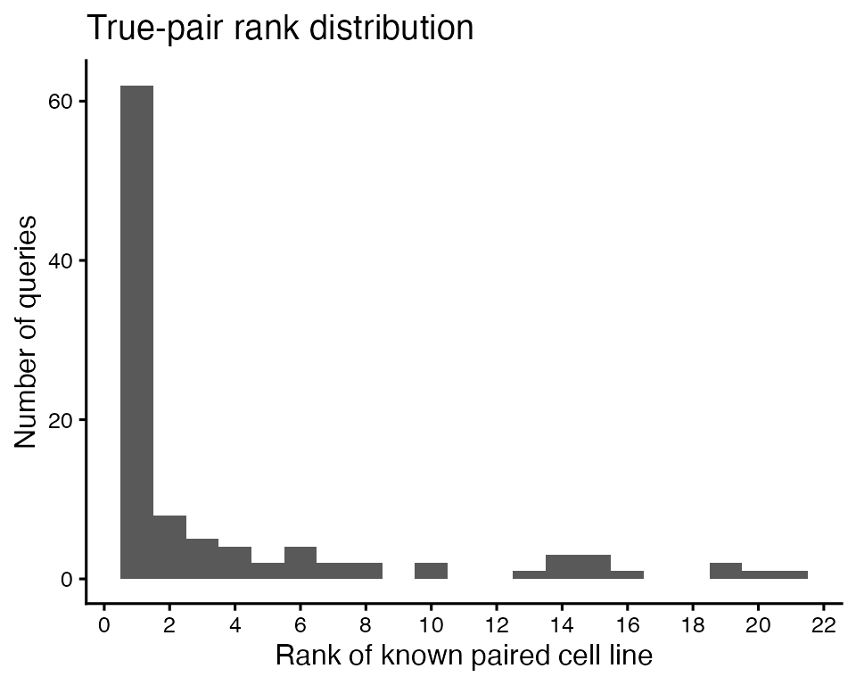
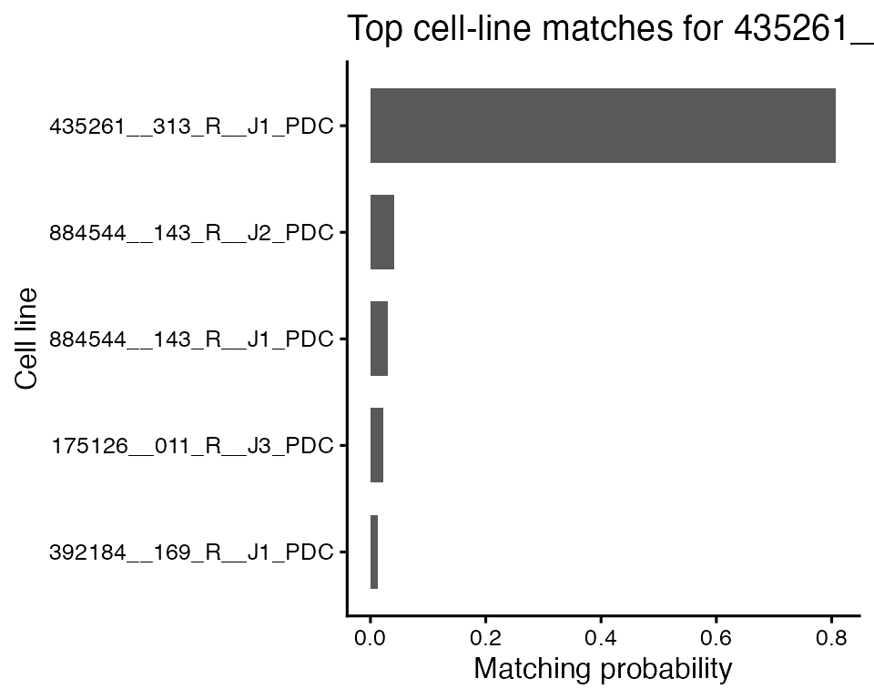

Single-Query Prediction with Tumor2Line
Tumor2Line developers
2026-10-14
Source:vignettes/Tumor2Line-single-query-prediction.Rmd
Tumor2Line-single-query-prediction.Rmd1. Overview
Tumor2Line matches a query population to candidate cancer cell lines using transcriptomic similarity at the population level. Query samples may represent patient tumors, PDOs, PDXs, organoids, or other tumor-derived models.

The Overview of Tumor2Line
The standard Tumor2Line workflow constructs a shared molecular representation using scaled PCA and performs population-aware matching with unbalanced optimal transport (uOT).
In many practical applications, a user may already have an established reference query cohort and later receive a single new query sample. Because Tumor2Line is designed as a population-level matching framework, the recommended strategy is to add the new query to the existing reference query cohort and rerun Tumor2Line on the combined query population.
This tutorial demonstrates that workflow using the bundled PDMR-format example dataset:
- hold out one PDMR tumor and treat it as a newly arriving query;
- use the remaining tumors as the reference query cohort;
- add the held-out tumor back to the reference cohort;
- rerun the complete Tumor2Line workflow on the combined query population;
- extract the candidate cell-line ranking for the new query;
- use the known PDMR pair only at the end to evaluate the prediction.
The held-out PDMR pairing information is not used during Tumor2Line matching.
3. Input data
3.1 Three logical input types
The bundled PDMR-format example uses:
PDMR_tumor_expr.tsv
PDMR_cellline_expr.tsv
PDMR_phenotype.tsvThe two expression tables have samples in rows. SampleID
identifies each sample and the remaining columns contain non-negative
gene-expression values. In this example, the phenotype table
contains:
-
SampleID: sample identifier; -
PairID: known query-cell line pair identifier used only for evaluation; -
SampleClass: biological sample type (tumororcelllinein this example); -
lineage: cancer lineage used to define the default candidate pool.
Tumor2Line does not require PairID or
SampleClass for matching. The roles query and
cellline are inferred from the two expression inputs.
3.2 Read the bundled example
query_expr_path <- system.file("extdata", "PDMR_tumor_expr.tsv", package = "Tumor2Line")
cell_expr_path <- system.file("extdata", "PDMR_cellline_expr.tsv", package = "Tumor2Line")
phenotype_path <- system.file("extdata", "PDMR_phenotype.tsv", package = "Tumor2Line")
query_expr <- utils::read.delim(query_expr_path, check.names = FALSE, stringsAsFactors = FALSE)
cellline_expr <- utils::read.delim(cell_expr_path, check.names = FALSE, stringsAsFactors = FALSE)
phenotype <- utils::read.delim(phenotype_path, check.names = FALSE, stringsAsFactors = FALSE)Inspect the three inputs:
dim(query_expr)
#> [1] 103 17939
dim(cellline_expr)
#> [1] 114 17939
dim(phenotype)
#> [1] 217 10
query_expr[1:3, 1:6]
#> SampleID A1BG A1CF A2M A2ML1 A3GALT2
#> 1 137432__314_R__ORIGINATOR 0.05 0.00 85.23 29.77 0.00
#> 2 147771__066_R1__ORIGINATOR 2.35 0.24 162.77 0.00 1.19
#> 3 161853__170_R__ORIGINATOR 0.90 0.00 421.98 0.02 0.00
cellline_expr[1:3, 1:6]
#> SampleID A1BG A1CF A2M A2ML1 A3GALT2
#> 1 137432__314_R__J2_PDC 0.02 0.00 0.07 16.97 0.00
#> 2 147771__066_R1__J1_PDC 0.02 0.78 0.00 0.08 0.03
#> 3 161853__170_R__J1_PDC 2.42 0.00 0.00 0.00 0.00
utils::head(phenotype)
#> SampleID PairID PatientID SpecimenID
#> 1 137432__314_R__ORIGINATOR 137432__314-R 137432 314_R
#> 2 137432__314_R__J2_PDC 137432__314-R 137432 314_R
#> 3 147771__066_R1__ORIGINATOR 147771__066-R1 147771 066_R1
#> 4 147771__066_R1__J1_PDC 147771__066-R1 147771 066_R1
#> 5 161853__170_R__ORIGINATOR 161853__170-R 161853 170_R
#> 6 161853__170_R__J1_PDC 161853__170-R 161853 170_R
#> PDMType SampleClass SampleType lineage TCGA_lineage
#> 1 Patient/Originator Specimen tumor Tumor OV OV
#> 2 PDC: Mixed Tumor Culture cellline CellLine OV OV
#> 3 Patient/Originator Specimen tumor Tumor COAD COADREAD
#> 4 PDC: Mixed Tumor Culture cellline CellLine COAD COADREAD
#> 5 Patient/Originator Specimen tumor Tumor UCEC UCEC
#> 6 PDC: Mixed Tumor Culture cellline CellLine UCEC UCEC
#> model_lineage
#> 1 OV
#> 2 OV
#> 3 COAD
#> 4 COAD
#> 5 UCEC
#> 6 UCECThe first column of each expression table is
SampleID.
4. Create a held-out new query
The PDMR dataset contains multiple query samples. To mimic a realistic single-query application, one tumor is held out and treated as a newly arriving query.
The held-out query is initially removed from the reference query
cohort. Its known PairID is retained separately and is used
only for final evaluation.
4.1 Identify eligible query samples
The held-out sample is selected from a lineage containing at least two query samples so that at least one query from the same lineage remains in the reference cohort. We additionally require the held-out sample to have a known PDMR pair so that its final ranking can be evaluated.
query_ids <- as.character(query_expr$SampleID)
cellline_ids <- as.character(cellline_expr$SampleID)
query_meta <- phenotype[phenotype$SampleID %in% query_ids, , drop = FALSE]
cellline_meta <- phenotype[phenotype$SampleID %in% cellline_ids, , drop = FALSE]
query_lineage_count <- table(query_meta$lineage)
eligible_lineages <- names(query_lineage_count[query_lineage_count >= 2])
eligible_lineages <- intersect(
eligible_lineages,
unique(cellline_meta$lineage)
)
valid_cellline_pair_ids <- unique(
cellline_meta$PairID[!is.na(cellline_meta$PairID) & cellline_meta$PairID != ""]
)
eligible_query_meta <- query_meta[
query_meta$lineage %in% eligible_lineages &
!is.na(query_meta$PairID) &
query_meta$PairID != "" &
query_meta$PairID %in% valid_cellline_pair_ids, ,
drop = FALSE
]
if (nrow(eligible_query_meta) == 0) {
stop(
"No eligible PDMR query is available for the single-query tutorial.",
call. = FALSE
)
}4.2 Randomly hold out one query
A fixed random seed makes the vignette reproducible.
set.seed(123)
new_query_id <- sample(eligible_query_meta$SampleID, 1)
new_query_meta_full <- phenotype[phenotype$SampleID == new_query_id, , drop = FALSE]
new_query_lineage <- as.character(new_query_meta_full$lineage[1])
new_query_id
#> [1] "435261__313_R__ORIGINATOR"
new_query_lineage
#> [1] "COAD"Separate the held-out query expression from the reference query cohort:
new_query_expr <- query_expr[query_expr$SampleID == new_query_id, , drop = FALSE]
reference_query_expr <- query_expr[query_expr$SampleID != new_query_id, , drop = FALSE]
dim(new_query_expr)
#> [1] 1 17939
dim(reference_query_expr)
#> [1] 102 17939All candidate cell lines remain available. This includes the true paired cell line of the held-out PDMR query because the practical prediction task is to determine where that candidate appears in the final ranking.
4.3 Separate ground truth from model inputs
The known PairID of the held-out PDMR query is retained
only for evaluation.
heldout_pair_id <- as.character(new_query_meta_full$PairID[1])
true_cellline_ids <- cellline_meta$SampleID[cellline_meta$PairID == heldout_pair_id]
heldout_truth <- data.frame(
Query_ID = new_query_id,
PairID = heldout_pair_id,
lineage = new_query_lineage,
True_CellLine_ID = true_cellline_ids,
stringsAsFactors = FALSE
)
heldout_truth
#> Query_ID PairID lineage True_CellLine_ID
#> 1 435261__313_R__ORIGINATOR 435261__313-R COAD 435261__313_R__J1_PDCConstruct metadata for Tumor2Line without pairing information:
reference_sample_ids <- c(
reference_query_expr$SampleID,
cellline_expr$SampleID
)
reference_phenotype <- phenotype[
phenotype$SampleID %in% reference_sample_ids, ,
drop = FALSE
]
reference_phenotype_model <- reference_phenotype[
,
setdiff(names(reference_phenotype), "PairID"),
drop = FALSE
]
new_query_metadata <- new_query_meta_full[
,
setdiff(names(new_query_meta_full), "PairID"),
drop = FALSE
]The held-out PDMR pair is therefore unavailable to Tumor2Line during matching.
5. Build the reference Tumor2Line cohort
The remaining PDMR tumors form the reference query cohort. Before adding the new tumor, we can run Tumor2Line on this existing cohort to establish the reference population.
reference_result <- run_tumor2line(
query_expr = reference_query_expr,
cellline_expr = cellline_expr,
phenotype = reference_phenotype_model,
sample_id_col = "SampleID",
pair_col = NULL,
lineage_col = "lineage",
sample_type_col = "SampleClass",
query_type = "tumor",
n_variable_genes = 10000,
pca_variance_threshold = 0.90,
max_pcs = NULL,
candidate_scope = "within_lineage",
distance = "euclidean",
epsilon = 0.1,
rho_query = 1,
rho_cellline = 1,
evaluate = FALSE
)
reference_result
#> Tumor2Line result
#> Queries: 102
#> Cell lines: 114
#> Lineages: 6
#> Selected genes: 10000
#> Selected PCs: 104
#> PCA threshold: 0.9
#> Maximum PCs: NULL (no user-defined limit)
#> Candidate scope: within_lineage
#> Ranking rows: 20685.1 Reference molecular representation
Tumor2Line constructs the reference molecular representation using:
reference queries + candidate cell lines
->
log2(TPM + 1)
->
gene filtering and variable-gene selection
->
joint gene-wise scaling
->
PCA
->
PCs reaching 90% cumulative variance
->
PC-wise scaling
reference_result$representation$n_pcs
#> [1] 104
utils::head(reference_result$representation$variance)
#> PC_index explained_variance cumulative_variance
#> 1 1 0.10618510 0.1061851
#> 2 2 0.09477912 0.2009642
#> 3 3 0.08175817 0.2827224
#> 4 4 0.05124884 0.3339712
#> 5 5 0.05049441 0.3844656
#> 6 6 0.03528999 0.41975565.2 Reference population-aware matching
The reference query cohort is matched jointly to the candidate cell-line population using uOT.
utils::head(reference_result$ranking)
#> # A tibble: 6 × 15
#> Method lineage Query_ID CellLine_ID transport_mass matching_probability
#> <chr> <chr> <chr> <chr> <dbl> <dbl>
#> 1 Tumor2Line COAD 147771__06… 147771__06… 0.00465 0.157
#> 2 Tumor2Line COAD 147771__06… 814844__32… 0.00392 0.133
#> 3 Tumor2Line COAD 147771__06… 339189__12… 0.00288 0.0973
#> 4 Tumor2Line COAD 147771__06… 884544__14… 0.00185 0.0626
#> 5 Tumor2Line COAD 147771__06… 981439__25… 0.00178 0.0601
#> 6 Tumor2Line COAD 147771__06… 825966__06… 0.00138 0.0468
#> # ℹ 9 more variables: query_total_mass <dbl>, cellline_total_mass <dbl>,
#> # cost <dbl>, rank <int>, n_candidates <int>, candidate_scope <chr>,
#> # OT_converged <lgl>, OT_iterations <int>, OT_final_delta <dbl>Important columns include:
-
Query_ID: reference query sample; -
CellLine_ID: candidate cell line; -
transport_mass: raw pair-specific mass assigned by the uOT transport plan; -
matching_probability: query-normalized transport mass used to express relative candidate priority; -
query_total_mass: total transport mass assigned from that query to all candidate cell lines; -
cellline_total_mass: total transport mass received by that candidate cell line from the query population; -
cost: molecular distance used by uOT; -
rank: query-specific candidate rank; -
n_candidates: size of the candidate pool.
6. Add the new query to the reference population
For a newly arriving single query, Tumor2Line does not match that sample in isolation. Instead, the new query is added to the existing reference query cohort, forming an updated query population.
The complete Tumor2Line workflow is then rerun on the combined query population and candidate cell-line population.
reference query cohort
+
new query
↓
combined query population
+
candidate cell lines
↓
scaled PCA
↓
population-aware uOT
↓
new-query cell-line ranking6.1 Combine the new query with the reference cohort
combined_query_expr <- rbind(
reference_query_expr,
new_query_expr
)
combined_query_ids <- as.character(combined_query_expr$SampleID)
combined_phenotype_model <- phenotype[
phenotype$SampleID %in% c(combined_query_ids, cellline_ids), ,
drop = FALSE
]
combined_phenotype_model <- combined_phenotype_model[
,
setdiff(names(combined_phenotype_model), "PairID"),
drop = FALSE
]
dim(combined_query_expr)
#> [1] 103 17939
dim(combined_phenotype_model)
#> [1] 217 9The new query is now part of the query population. Its expression profile therefore contributes to the molecular representation and to the subsequent population-aware uOT matching.
6.2 Rerun Tumor2Line on the combined population
population_result <- run_tumor2line(
query_expr = combined_query_expr,
cellline_expr = cellline_expr,
phenotype = combined_phenotype_model,
sample_id_col = "SampleID",
pair_col = NULL,
lineage_col = "lineage",
sample_type_col = "SampleClass",
query_type = "tumor",
n_variable_genes = 10000,
pca_variance_threshold = 0.90,
max_pcs = NULL,
candidate_scope = "within_lineage",
distance = "euclidean",
epsilon = 0.1,
rho_query = 1,
rho_cellline = 1,
evaluate = FALSE
)
population_result
#> Tumor2Line result
#> Queries: 103
#> Cell lines: 114
#> Lineages: 6
#> Selected genes: 10000
#> Selected PCs: 104
#> PCA threshold: 0.9
#> Maximum PCs: NULL (no user-defined limit)
#> Candidate scope: within_lineage
#> Ranking rows: 2095This step reruns the complete Tumor2Line workflow after the new query has been incorporated into the population.
6.3 Extract the new-query ranking
new_query_top5 <- get_top_matches(
population_result,
n = 5,
query_id = new_query_id
)
new_query_top5
#> # A tibble: 5 × 15
#> Method lineage Query_ID CellLine_ID transport_mass matching_probability
#> <chr> <chr> <chr> <chr> <dbl> <dbl>
#> 1 Tumor2Line COAD 435261__31… 435261__31… 0.0316 0.808
#> 2 Tumor2Line COAD 435261__31… 884544__14… 0.00164 0.0419
#> 3 Tumor2Line COAD 435261__31… 884544__14… 0.00117 0.0300
#> 4 Tumor2Line COAD 435261__31… 175126__01… 0.000856 0.0219
#> 5 Tumor2Line COAD 435261__31… 392184__16… 0.000494 0.0126
#> # ℹ 9 more variables: query_total_mass <dbl>, cellline_total_mass <dbl>,
#> # cost <dbl>, rank <int>, n_candidates <int>, candidate_scope <chr>,
#> # OT_converged <lgl>, OT_iterations <int>, OT_final_delta <dbl>To inspect the full candidate ranking for the new query:
new_query_ranking <- population_result$ranking[
population_result$ranking$Query_ID == new_query_id, ,
drop = FALSE
]
new_query_ranking[,
c("Query_ID",
"CellLine_ID",
"transport_mass",
"matching_probability",
"query_total_mass",
"cellline_total_mass",
"cost",
"rank")] |>
utils::head(10)
#> # A tibble: 10 × 8
#> Query_ID CellLine_ID transport_mass matching_probability query_total_mass
#> <chr> <chr> <dbl> <dbl> <dbl>
#> 1 435261__313… 435261__31… 0.0316 0.808 0.0391
#> 2 435261__313… 884544__14… 0.00164 0.0419 0.0391
#> 3 435261__313… 884544__14… 0.00117 0.0300 0.0391
#> 4 435261__313… 175126__01… 0.000856 0.0219 0.0391
#> 5 435261__313… 392184__16… 0.000494 0.0126 0.0391
#> 6 435261__313… 981439__25… 0.000415 0.0106 0.0391
#> 7 435261__313… 825966__06… 0.000363 0.00926 0.0391
#> 8 435261__313… 147771__06… 0.000362 0.00925 0.0391
#> 9 435261__313… 392184__16… 0.000291 0.00743 0.0391
#> 10 435261__313… 715222__19… 0.000183 0.00467 0.0391
#> # ℹ 3 more variables: cellline_total_mass <dbl>, cost <dbl>, rank <int>Here:
-
transport_massis the raw uOT mass assigned to the new query-cell-line pair; -
matching_probabilityis the query-normalized transport mass; -
query_total_massis the total mass transported from the new query; -
rank = 1is the highest-priority candidate cell line.
7. Evaluate the held-out PDMR pair
Because the selected PDMR query has known pairing information, we can now reveal the held-out ground truth and locate the known paired cell line in the new query’s ranking.
true_rows <- new_query_ranking[
new_query_ranking$CellLine_ID %in% true_cellline_ids, ,
drop = FALSE]
if (nrow(true_rows) == 0) {
single_query_evaluation <- data.frame(
Query_ID = new_query_id,
Top_candidate = new_query_top5$CellLine_ID[1],
True_CellLine_ID = NA_character_,
True_pair_rank = NA_integer_,
Top1 = FALSE,
Top3 = FALSE,
Reciprocal_rank = NA_real_,
stringsAsFactors = FALSE
)
} else {
true_row <- true_rows[which.min(true_rows$rank), , drop = FALSE]
single_query_evaluation <- data.frame(
Query_ID = new_query_id,
Top_candidate = new_query_top5$CellLine_ID[1],
True_CellLine_ID = true_row$CellLine_ID[1],
True_pair_rank = as.integer(true_row$rank[1]),
Top1 = true_row$rank[1] <= 1,
Top3 = true_row$rank[1] <= 3,
Reciprocal_rank = 1 / true_row$rank[1],
stringsAsFactors = FALSE
)
}
single_query_evaluation
#> Query_ID Top_candidate True_CellLine_ID
#> 1 435261__313_R__ORIGINATOR 435261__313_R__J1_PDC 435261__313_R__J1_PDC
#> True_pair_rank Top1 Top3 Reciprocal_rank
#> 1 1 TRUE TRUE 1For a single held-out query, the most useful quantities are:
-
True_pair_rank: rank of the known paired cell line; -
Top1: whether the true pair was ranked first; -
Top3: whether the true pair was ranked within the first three candidates; -
Reciprocal_rank:1 / true_pair_rank.
These are sample-level outcomes rather than cohort-level accuracy estimates.
The single held-out example is intended to demonstrate package usage. A formal performance assessment would require repeating the held-out procedure across many or all PDMR queries.
8. Why population context matters
Tumor2Line is designed to match query and cell-line populations jointly rather than scoring each query-cell-line pair independently.
When a new tumor is analyzed, it is therefore added to the existing reference query cohort before Tumor2Line is rerun.
single new query
+
reference query cohort
↓
updated query population
↓
joint molecular representation
↓
population-aware uOT
↓
candidate cell-line rankingThis preserves the central population-level design of Tumor2Line. The candidate ranking for the new query is obtained in the context of the other query samples and the candidate cell-line population.
9. When should I use this workflow?
Use this single-query workflow when:
- one new tumor, PDO, PDX, organoid, or other query sample needs candidate cell-line selection;
- an existing reference query cohort is available;
- the new query can be combined with that reference cohort using compatible expression measurements;
- population-aware Tumor2Line matching is desired.
The recommended procedure is:
new query
+
reference query cohort
↓
rerun Tumor2Line
↓
extract new-query candidate rankingIf no reference query cohort is available, the new sample lacks query-side population context. In that setting, a pairwise query-cell-line similarity analysis may still be possible, but it is not the full population-aware Tumor2Line workflow.
10. Standard cohort analysis
The same run_tumor2line() function is used when multiple
query samples are analyzed simultaneously.
cohort_result <- run_tumor2line(
query_expr = query_expr,
cellline_expr = cellline_expr,
phenotype = phenotype,
sample_id_col = "SampleID",
pair_col = "PairID",
lineage_col = "lineage",
sample_type_col = "SampleClass",
query_type = "tumor",
n_variable_genes = 10000,
pca_variance_threshold = 0.90,
max_pcs = NULL,
candidate_scope = "within_lineage",
distance = "euclidean",
epsilon = 0.1,
rho_query = 1,
rho_cellline = 1
)
cohort_result
#> Tumor2Line result
#> Queries: 103
#> Cell lines: 114
#> Lineages: 6
#> Selected genes: 10000
#> Selected PCs: 104
#> PCA threshold: 0.9
#> Maximum PCs: NULL (no user-defined limit)
#> Candidate scope: within_lineage
#> Ranking rows: 2095
#>
#> Known-pair evaluation:
#> # A tibble: 1 × 6
#> n_query Top1_accuracy Top3_accuracy MRR median_true_rank mean_true_rank
#> <int> <dbl> <dbl> <dbl> <int> <dbl>
#> 1 103 0.602 0.728 0.692 1 3.7710.1 Candidate rankings
utils::head(cohort_result$ranking)
#> # A tibble: 6 × 15
#> Method lineage Query_ID CellLine_ID transport_mass matching_probability
#> <chr> <chr> <chr> <chr> <dbl> <dbl>
#> 1 Tumor2Line COAD 147771__06… 147771__06… 0.00412 0.146
#> 2 Tumor2Line COAD 147771__06… 814844__32… 0.00337 0.120
#> 3 Tumor2Line COAD 147771__06… 339189__12… 0.00273 0.0969
#> 4 Tumor2Line COAD 147771__06… 884544__14… 0.00205 0.0729
#> 5 Tumor2Line COAD 147771__06… 981439__25… 0.00202 0.0717
#> 6 Tumor2Line COAD 147771__06… 825966__06… 0.00132 0.0471
#> # ℹ 9 more variables: query_total_mass <dbl>, cellline_total_mass <dbl>,
#> # cost <dbl>, rank <int>, n_candidates <int>, candidate_scope <chr>,
#> # OT_converged <lgl>, OT_iterations <int>, OT_final_delta <dbl>The principal ranking columns are:
-
Query_ID: focal query sample; -
CellLine_ID: candidate cell line; -
transport_mass: raw pair-specific mass assigned by the uOT transport plan; -
matching_probability: query-normalized transport mass, calculated as the pair-specifictransport_massdivided by the total transport mass assigned from that query to all candidate cell lines; -
query_total_mass: total mass transported from the focal query; -
cellline_total_mass: total mass received by the candidate cell line; -
cost: molecular distance used by uOT; -
rank: query-specific candidate rank based onmatching_probability; -
n_candidates: size of the candidate pool.
10.2 Top candidates
cohort_top5 <- get_top_matches(
cohort_result,
n = 5
)
utils::head(cohort_top5, 10)
#> # A tibble: 10 × 15
#> Method lineage Query_ID CellLine_ID transport_mass matching_probability
#> <chr> <chr> <chr> <chr> <dbl> <dbl>
#> 1 Tumor2Line OV 137432__3… 137432__31… 0.0374 0.463
#> 2 Tumor2Line OV 137432__3… 245127__23… 0.00909 0.112
#> 3 Tumor2Line OV 137432__3… 217283__34… 0.00569 0.0704
#> 4 Tumor2Line OV 137432__3… 899872__11… 0.00472 0.0584
#> 5 Tumor2Line OV 137432__3… 718893__12… 0.00418 0.0517
#> 6 Tumor2Line COAD 147771__0… 147771__06… 0.00412 0.146
#> 7 Tumor2Line COAD 147771__0… 814844__32… 0.00337 0.120
#> 8 Tumor2Line COAD 147771__0… 339189__12… 0.00273 0.0969
#> 9 Tumor2Line COAD 147771__0… 884544__14… 0.00205 0.0729
#> 10 Tumor2Line COAD 147771__0… 981439__25… 0.00202 0.0717
#> # ℹ 9 more variables: query_total_mass <dbl>, cellline_total_mass <dbl>,
#> # cost <dbl>, rank <int>, n_candidates <int>, candidate_scope <chr>,
#> # OT_converged <lgl>, OT_iterations <int>, OT_final_delta <dbl>10.3 Known-pair evaluation
Because the PDMR example contains known pairs, cohort-level performance can be summarized automatically:
cohort_result$evaluation$summary
#> # A tibble: 1 × 6
#> n_query Top1_accuracy Top3_accuracy MRR median_true_rank mean_true_rank
#> <int> <dbl> <dbl> <dbl> <int> <dbl>
#> 1 103 0.602 0.728 0.692 1 3.77The principal cohort metrics are:
- Top1 accuracy;
- Top3 accuracy;
- mean reciprocal rank (MRR);
- true-pair rank.
These metrics are available only when known pairing information is supplied.
11. Visualization

11.2 True-pair rank distribution
plot_true_pair_ranks(cohort_result)
Lower true-pair ranks indicate better recovery. Rank 1 means Tumor2Line selected the known paired cell line as its first recommendation.
11.3 Candidate cell lines for the held-out query
plot_top_matches(
population_result,
query_id = new_query_id,
n = 5
)
12. Using your own data
12.1 Standard query cohort
For a new dataset containing multiple query samples:
query_expr <- read.delim(
"query_gene_expression.tsv",
check.names = FALSE
)
cellline_expr <- read.delim(
"cellline_gene_expression.tsv",
check.names = FALSE
)
phenotype <- read.delim(
"phenotype.tsv",
check.names = FALSE
)
result <- run_tumor2line(
query_expr = query_expr,
cellline_expr = cellline_expr,
phenotype = phenotype,
sample_id_col = "SampleID",
pair_col = NULL,
lineage_col = "lineage",
candidate_scope = "within_lineage"
)
get_top_matches(
result,
n = 5
)The query population may contain tumors, PDOs, PDXs, organoids, or other tumor-derived samples.
12.2 Add one new query to an existing reference cohort
Assume reference_query_expr contains the existing
reference query population and new_query_expr contains one
newly arriving query.
combined_query_expr <- rbind(
reference_query_expr,
new_query_expr
)The metadata for the new query should be added to the metadata for the existing reference cohort and candidate cell lines:
combined_phenotype <- rbind(
reference_query_metadata,
new_query_metadata,
cellline_metadata
)Then rerun Tumor2Line on the combined query population:
result <- run_tumor2line(
query_expr = combined_query_expr,
cellline_expr = cellline_expr,
phenotype = combined_phenotype,
sample_id_col = "SampleID",
pair_col = NULL,
lineage_col = "lineage",
candidate_scope = "within_lineage"
)Finally, extract the candidate cell lines for the new query:
get_top_matches(
result,
n = 5,
query_id = new_query_id
)This is the recommended Tumor2Line workflow for a single newly arriving query when a reference query cohort is available.
13. Summary
Tumor2Line is fundamentally a population-aware matching framework.
For a standard query cohort:
query population
+
candidate cell-line population
↓
scaled PCA
↓
population-aware uOT
↓
query-specific cell-line rankingsFor one newly arriving query:
reference query cohort
+
new query
↓
updated query population
+
candidate cell-line population
↓
rerun Tumor2Line
↓
new-query candidate cell-line rankingThe new query is therefore analyzed as part of a query population rather than as an isolated sample.
Known query-cell-line pairing information is never required for matching and is used only when ground-truth evaluation is available.
14. Session information
sessionInfo()
#> R version 4.4.3 (2025-02-28)
#> Platform: aarch64-apple-darwin20
#> Running under: macOS Sequoia 15.6.1
#>
#> Matrix products: default
#> BLAS: /Library/Frameworks/R.framework/Versions/4.4-arm64/Resources/lib/libRblas.0.dylib
#> LAPACK: /Library/Frameworks/R.framework/Versions/4.4-arm64/Resources/lib/libRlapack.dylib; LAPACK version 3.12.0
#>
#> locale:
#> [1] en_US.UTF-8/en_US.UTF-8/en_US.UTF-8/C/en_US.UTF-8/en_US.UTF-8
#>
#> time zone: Asia/Shanghai
#> tzcode source: internal
#>
#> attached base packages:
#> [1] stats graphics grDevices utils datasets methods base
#>
#> other attached packages:
#> [1] Tumor2Line_0.1.2
#>
#> loaded via a namespace (and not attached):
#> [1] gtable_0.3.6 jsonlite_2.0.0 dplyr_1.1.4 compiler_4.4.3
#> [5] tidyselect_1.2.1 dichromat_2.0-0.1 jquerylib_0.1.4 systemfonts_1.3.1
#> [9] scales_1.4.0 textshaping_1.0.4 yaml_2.3.10 fastmap_1.2.0
#> [13] ggplot2_4.0.0 R6_2.6.1 labeling_0.4.3 generics_0.1.4
#> [17] knitr_1.50 htmlwidgets_1.6.4 tibble_3.3.0 desc_1.4.3
#> [21] RColorBrewer_1.1-3 bslib_0.9.0 pillar_1.11.1 rlang_1.1.6
#> [25] utf8_1.2.6 cachem_1.1.0 xfun_0.54 S7_0.2.0
#> [29] fs_1.6.6 sass_0.4.10 cli_3.6.5 pkgdown_2.1.3
#> [33] withr_3.0.2 magrittr_2.0.4 digest_0.6.37 grid_4.4.3
#> [37] rstudioapi_0.17.1 lifecycle_1.0.4 vctrs_0.6.5 evaluate_1.0.5
#> [41] glue_1.8.0 farver_2.1.2 ragg_1.5.0 rmarkdown_2.30
#> [45] tools_4.4.3 pkgconfig_2.0.3 htmltools_0.5.8.1